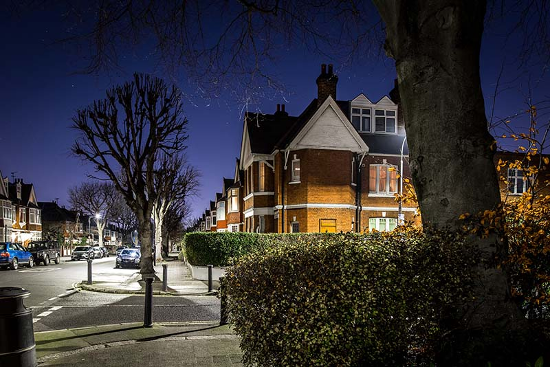
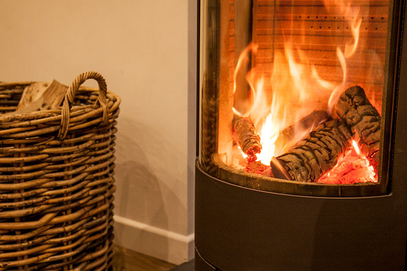

Skip to Main Content
Menu
Close
Health
Wood smoke and health overview
Particle pollution
Ultrafine particles
Wood smoke is particle pollution
Wood smoke is toxic pollution
Wood smoke health effects
Children and wood smoke
The real cost of wood burning
Sources
Residential burning
Residential burning overview
Wood stoves
Wood stove changeouts
Pellet stoves
Wood-burning fireplaces
Outdoor wood boilers
Backyard recreational burning
Public places
Public places overview
Wood-burning restaurants
Secondhand smoke
Secondhand smoke issues overview
Wood smoke is the other secondhand smoke
Wood smoke is a human rights issue
Wood burning industry tactics
A precedent for change
Environment
Wood burning and the environment
Biomass energy
Wood burning and our climate
Resources
News and extras
Citizen science air quality monitoring
Wood smoke quick facts
Advocate for wood-smoke-free air
Wood smoke pollution references
Stories
About
News And extras
Posts tagged:
Clean Air Night
News
Clean Air Night 2026
Wood burning is the most polluting way to heat your home—a key message behind this year’s campaign.
Read more
News
Wood burning linked to UK deaths and high NHS costs
A new UK report links wood burning to around 2,500 deaths a year and millions in costs for the National Health Service.
Read more

News
We’re supporting Clean Air Night
DSAWSP is joining Clean Air Night this year, which aims to “shine a light on the uncomfortable truth about wood burning.”
Read more

News
Clean Air Night
There’s a new campaign in the UK to inform the public that wood burning “hurts your health and the planet.”
Read more
1
Back to main posts page